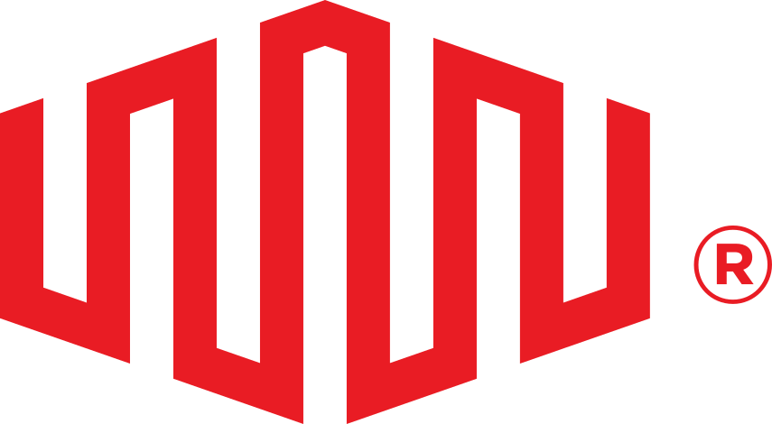
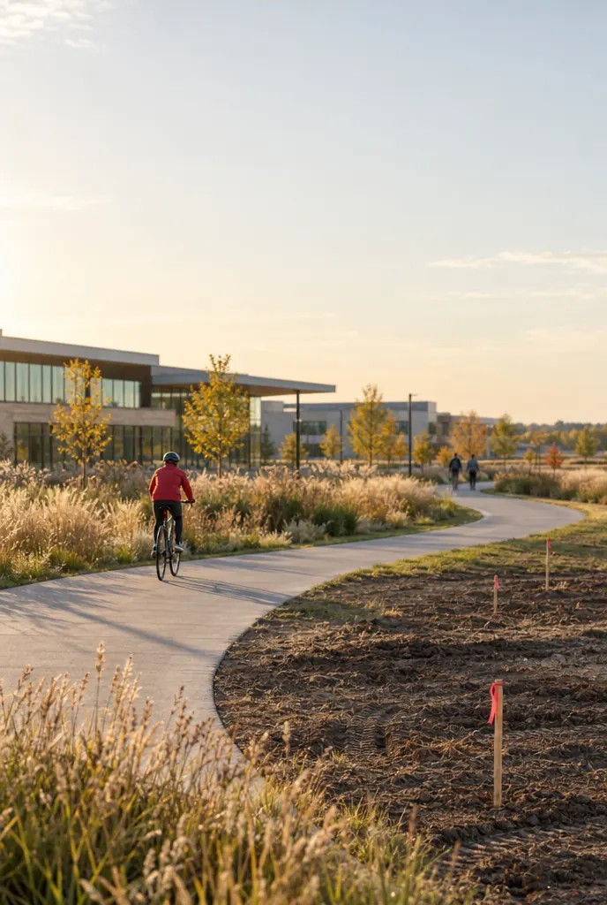

01 Care Hospital
Care that connects.
A radiologist opens a patient’s scan. Somewhere, a family is waiting for what it shows.
Under 1 secondto retrieve a medical image
Open the story
3verest


Equinix Where the light goes
Follow what leaves a data center: light, heat, work and care. Six places, one connected community, and every story sourced.
Scroll
01 Care Hospital
A radiologist opens a patient’s scan. Somewhere, a family is waiting for what it shows.
Under 1 secondto retrieve a medical image
An illustrative community, not a real place. Each story refers to its named location. Move with the arrow keys, or click the field to send a ripple through it.
Equinix is not a visitor in these places. We are part of the communities we serve: the clinics and labs that rely on our connections, the schools we open our doors to, the neighbours who share our heat.
One day, connected
Seven moments, in seven places, from a single day that Equinix infrastructure quietly helps make possible. Scroll to move through it.
Each moment links to its sourced story. The films are illustrative and AI generated.
05:40
Saint-Denis, Paris
The pool is warm before the first swimmer arrives.
Warm water for a neighbourhood pool in Saint-Denis07:15
A reading room
A radiologist opens a scan. It arrives in under a second.
Medical images, ready when the care team needs them09:30
Sydney
Researchers compare one child’s case with data from Philadelphia, Memphis and Heidelberg.
Comparing notes across the world for every child with cancer11:00
An Equinix IBX
A school group walks the corridors and asks how it all works.
From a school tour to a technician’s badge16:00
Minooka, Illinois
A cyclist takes the new public path along the edge of the campus.
A neighbour that plans to stay for decades18:30
A public library
A volunteer helps a neighbour get online for the first time.
Bringing more people online, and helping them thrive there23:00
Markham, Ontario
The night shift keeps the pulse steady. Outside, recovered heat is still flowing to homes.
Heat for homes, offices and two community pools in MarkhamNone of this is the data center’s work alone. It is what becomes possible when a community is connected to it.
The promises behind itIn numbers
Part of the community
Equinix has operated since 1998 and intends to stay in its communities for decades. Our U.S. Community Principles say what neighbours can expect, and we report against them.
Invest in roads, paths and public services around our sites, and fund the power and water infrastructure our sites need.
Site example Minooka, IllinoisA public bike path and land for a future fire station in Minooka, Illinois.
Pay our full share of grid costs so our demand does not raise residents’ bills.
Agreement With ComEdA 10-year transmission agreement with ComEd that the utility described as a model.
Create quality jobs and educational pathways for tomorrow’s workforce.
Programme Ashburn and DallasSchool partnerships through Pathways to Tech, starting in Ashburn and Dallas.
Use water and land carefully and report transparently.
Design choice New sites in water-stressed areasAvoiding water-based cooling at new sites in water-stressed areas.
Expand access to connectivity, skills and careers.
Result Employee teams, 202528 WeAreEquinix teams supported 31 local digital inclusion nonprofits in 2025.

Equinix U.S. Community Principles. Not every action applies at every location. Read the principles (opens in a new tab)
The people behind the connections
“Data centers are the heartbeat of our digital world, but it’s people who keep that pulse healthy and strong.”
Experts in electrical systems, cooling and network engineering who keep facilities running every hour of every day.
The colleagues who work alongside customers such as 3verest and Children’s Cancer Institute, and who carry these stories into every conversation.
The people who turn waste heat into warm water for neighbours in Paris, Helsinki and Markham.
More than 4,600 colleagues volunteered in 2025, from Pathways to Tech tours to WeGive teams choosing local causes.
Kayla’s path
The library
Every summary is attributed and links to its source. Copy one into a note, a deck or a conversation.

3verest
3verest runs sovereign healthcare clouds from Equinix facilities so radiologists can retrieve medical images in under a second while patient data stays within its jurisdiction.
Harrison.ai
Harrison.ai develops AI that helps clinicians read chest X-rays, building its models on NVIDIA infrastructure hosted in an Equinix data center.

Children's Cancer Institute
Children's Cancer Institute in Sydney uses Equinix Fabric to connect its precision medicine data directly with cloud providers and research collaborators overseas.

Equinix employees and the Equinix Foundation
Pathways to Tech opens Equinix data centers to students aged 14 to 18 through classroom talks, facility tours and education days led by employee volunteers.
Equinix Foundation with Generation and coalition partners
The Equinix Foundation and Generation launched the Global Data Center Technician Training Coalition, starting in Brazil with co-funding from ODATA, Cisco and Vertiv.

Equinix with local governments, utilities and community leaders
Equinix’s U.S. Community Principles set out what neighbours can expect: paying our full share of grid costs, investing in public infrastructure, local jobs and skills, careful use of resources and digital inclusion.

Equinix Foundation and its nonprofit partners
The Equinix Foundation funds nonprofits that expand connectivity, digital skills and workforce readiness, chosen with input from local Equinix employees.
Equinix employees
Through WeGive, WeSkill and Matching Gifts, Equinix employees support local organisations with their time, expertise and giving, choosing the causes themselves.

Equinix PA10 with the local heat network operator
Equinix PA10 in Saint-Denis, Paris, recovers heat from customer servers for the local heat network that supplies the Olympic Aquatics Centre and homes nearby.
Equinix TR5 with Markham District Energy
Equinix TR5 exports residual heat to Markham District Energy, the city-owned utility that warms buildings, condo hot water and two community centre pools.
Equinix
Equinix reports its 2025 performance, an average annual PUE of 1.37 and 96% renewable energy coverage across retail IBX data centers, and has dated commitments for what comes next.
No stories match these filters yet.
Training and resources
What to download, how to practise, and where to talk about it. The library is being assembled; every item below is a placeholder until its asset is approved.
Approved files for decks, notes and conversations.
Short practice scenarios, each tied to a story on this page. Yoodli exercises will be linked here.
Open with 3verest or Children’s Cancer Institute: what the connection makes possible, then one promise. Two minutes.
Yoodli exercise, placeholderLead with the Community Principles: ComEd, dry cooling, the Minooka bike path. Acknowledge, then specifics.
Yoodli exercise, placeholderKayla’s path and Pathways to Tech, in your own words. One minute.
Yoodli exercise, placeholderUse one figure with its scope and period, and name the source. Practise saying the caveat naturally.
Yoodli exercise, placeholderThe conversation lives in our Viva Engage community: add the stories you see in your region, and help partners carry the message.
Sources and progress
Results reported for a past period.
Current programmes and customer stories.
Stated future commitments, not yet outcomes.
Equinix Sustainability Report (opens in a new tab) Equinix Foundation (opens in a new tab) U.S. Community Principles (opens in a new tab)